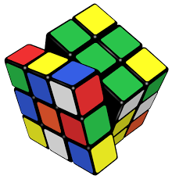

Seeing differently
Drawing is a useful reset: observe carefully, try a line, revise, and let the idea become visible.
Off the clock
The same things I value in engineering—patience, experimentation, and the satisfaction of making something work—show up in the way I recharge.
Drawing is a useful reset: observe carefully, try a line, revise, and let the idea become visible.
Cooking brings technique and intuition together—and the best result is something other people can enjoy.

Collecting and solving different cubes is a compact exercise in systems thinking: every move changes what comes next.
“Good engineering and good hobbies have something in common: stay curious long enough, and complexity becomes a pattern.”Work with me →